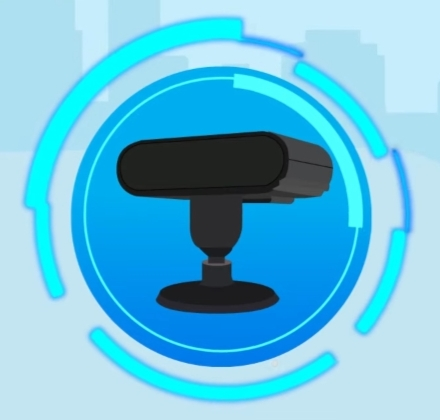

| Gambar |
Fasilitas |
Deskripsi |
Kegunaan |
|
ADAS (Advanced Driver Assistance Systems) |
ADAS adalah sistem sensor dan elektronik yang dapat membantu pengemudi dalam mengemudi dengan aman dan nyaman. Kamera pengawas jalan dengan teknologi AI untuk memberikan peringatan alarm awal. |
Fungsi Advance Driver Assistance System dilengkapi dengan berbagai fitur yang dapat membantu mengurangi risiko kecelakaan dan meningkatkan keselamatan pengemudi dan penumpang. |
|
APC (Automatic Passenger Counting) |
APC adalah perangkat penghitung jumlah penumpang bus berteknologi AI dengan akurasi yang sangat tinggi. |
Funggsi APC untuk penghitungan penumpang otomatis, untuk mengetahui kapan dan berapa banyak penumpang yang perlu ditangani oleh setiap kendaraan. |
|
Led Running Text |
LED Running Text adalah sebuah teknik elektronik yang menampilkan sebuah tulisan bergerak atau berjalan yang terdiri dari susunan LED kemudian terhubung secara matrix dengan perpaduan LED antara baris dan kolomnya. |
Fungsinya untuk media informasi, sarana iklan, dan juga sebagai penunjuk waktu yang dapat menampilkan detik, menit, jam, hari dan tanggal. |
|  |
DSM (Driver Safety Monitoring) |
Driver Monitoring System (DMS) adalah teknologi yang digunakan dalam kendaraan untuk memonitor aktivitas dan perilaku pengemudi. Sistem ini biasanya menggunakan kamera dan sensor yang terletak di dalam kabin kendaraan untuk mendeteksi aktivitas pengemudi seperti gerakan kepala, posisi tubuh, dan kehadiran pengemudi di kursi. |
DMS dapat membantu mengurangi risiko kecelakaan karena dapat mendeteksi tanda-tanda kelelahan, ketidaksengajaan, dan gangguan pengemudi lainnya. DMS juga dapat digunakan untuk mengumpulkan data tentang perilaku pengemudi dan digunakan untuk membantu perusahaan mengembangkan program pelatihan atau program pencegahan kecelakaan. |
|
TOB (Tap On Bus) |
TOB ini membaca pembayaran non tunai (kartu non tunai, e-Money dan QR Code) yang dilakukan penumpang saat naik (tap in) |
Fasilitas tap on bus (TOB) digunakan untuk memudahkan penumpang saat tap in dan tap out. |
|
iButton |
Ibutton adalah perangkat dengan microchip yang terbungkus dalam kandang stainless steel yang tahan lama berukuran tebal 16 mm dan dimaksudkan menyerupai tombol. |
Fungsi dari iButton ini sebagai absensi untuk mendata pengemudi yang sedang bertugas. |
|
MDVR (Mobile Digital Video Recorder) |
MDVR adalah alat yang digunakan untuk mengontrol situasi dan kondisi kendaraan saat berkendara dan juga mengontrol situasi, kondisi dan perilaku pengemudi yang sedang mengemudi. |
MDVR ini berfungsi untuk merekam video dalam format digital dan disimpan ke media penyimpanan lokal atau cloud server. |
 |
Blind Spot Detection Camera (With AI) |
Blind spot monitor atau blind spot detector adalah fitur keselamatan yang dapat membantu pengemudi mobil untuk memonitor bagian mobil yang tidak bisa terlihat dengan mata kepalanya. |
Fungsi dari fitur ini adalah untuk memperingatkan pengemudi ketika ada kendaraan yang sedang mendekat. |
|
High Definition Small Dome Camera |
Kamera CCTV di dalam armada bus dengan sudut normal dan lebar yang memiliki sensor siang/malam (ICR), digital noise filter dan rentang dinamis. |
Fungsinya adalah dapat menangkap video walaupun dalam kegelapan total dan dapat menangkap kualitas video yang lebih baik dalam kondisi pada saat cahaya rendah. |
|
Indicator R-Watch |
Perangkat sensor dengan teknologi AI yang memberikan indikator informasi mengenai perilaku atau cara mengemudi yang dilengkapi alarm. |
Fungsinya untuk memberikan peringatan awal jika armada kendaraan terdeteksi menyimpang dari jalur, melewati batas kecepatan ataupun jika terjadi potensi tabrakan depan. |
|
CP4 Multi-Functions Touch Panel |
CP4 Multi-Functions Touch Panel adalah panel sentuh multifungsi yang ada di panel dashboard bus. |
Kegunaan dari fitur ini adalah membaca kartu saat pengemudi beroperasi, media komunikasi satu arah dari pengemudi ke penumpang, dan controll blackbox. |
|
GPS (Global Positioning System) |
GPS, atau Global Positioning System, adalah sistem satelit navigasi global yang menyediakan sinkronisasi lokasi, kecepatan, dan waktu. |
Berfungsi untuk memberikan posisi dan kecepatan tiga-dimensi serta informasi mengenai waktu, secara kontinyu di seluruh dunia tanpa bergantung waktu dan cuaca, kepada banyak orang secara simultan. |